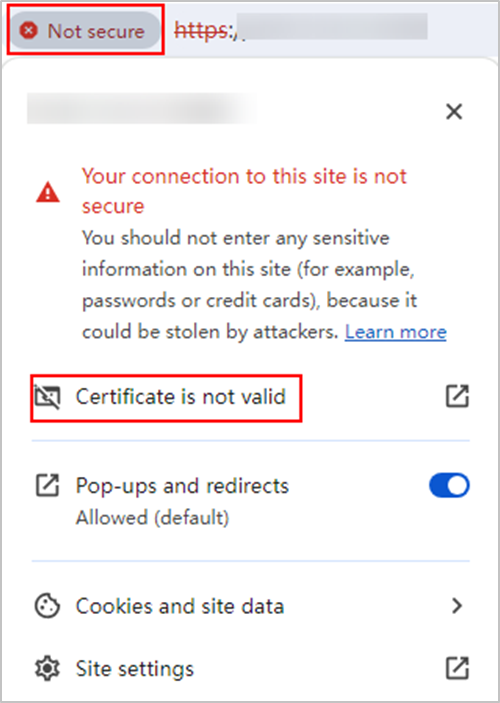

When registering the CNware virtualization platform, you are advised to import the CA certificate of the CNware virtualization platform. Otherwise, the system cannot verify the information about the accessed devices, resulting in security risks. This section describes how to obtain the CA certificate of the CNware virtualization platform.
Downloading the CA Certificate of the Storage Resource
- In the address box of Google Chrome, enter the URL of the CNware virtualization platform and press Enter.
- Click Not secure on the left of the URL bar, and click Certificate is not valid.
The displayed information varies depending on the browser. The following uses Google Chrome 120 as an example.

- In the dialog box that is displayed, click the Details tab and click Export.
- Export the certificate and rename the certificate file XXX.pem as prompted.

XXX indicates the actual certificate name. The certificate must be in .pem format.